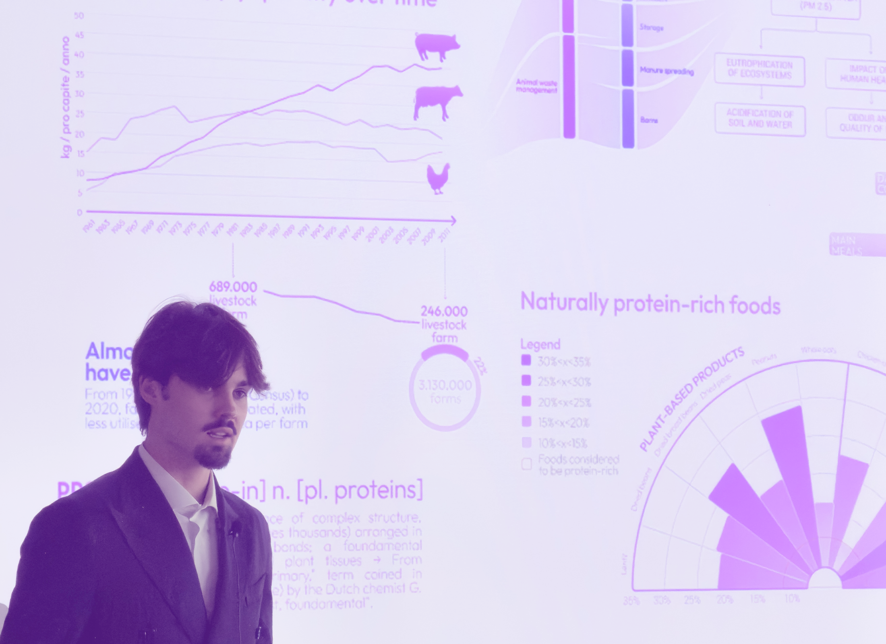

Systemic and strategic designer
Federico Covolan
Turning complex resource flows into circular, regenerative opportunity.
Scroll to explore
Systemic Design
Strategic Foresight
Speculative Futures
Service Systems
UX & UI
Product Design
Exhibition
Research
Systemic Design
Strategic Foresight
Speculative Futures
Service Systems
UX & UI
Product Design
Exhibition
Research
Statement
I design the invisible connections that make an ecosystem work — translating deep-tech research and resource flows into circular, buildable opportunity.
Trained at Politecnico di Torino, AHO Oslo and Università di Ferrara, I work at the intersection of systemic, strategic and speculative design — mapping resource flows, prototyping new supply chains and translating deep-tech research into viable products and services. Today I'm building ProLemna, an agrifood venture incubated at 2i3T and selected by the 2024 Range Rover Leadership Academy — where I bridge vision and market execution every day.